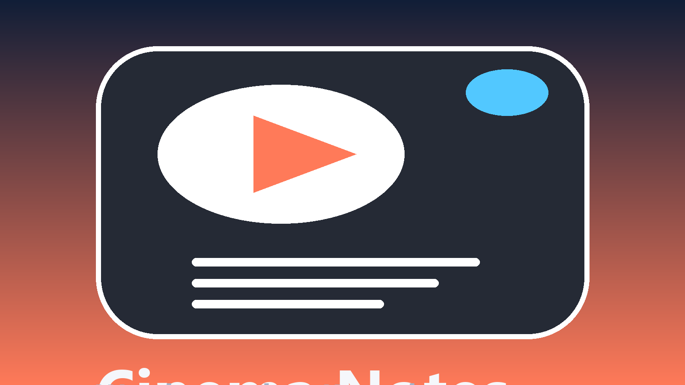

Android / Fullstack
Cinema Notes
Приложение для совместного просмотра, комнат, профилей друзей и заметок по фильмам, сериалам и аниме.
- Мой вклад: мобильная навигация, комнаты просмотра, профиль, заметки, релизный контур.
- Результат: APK-релизы, GitHub Pages-страница, проверка lint/TypeScript и backend tests.